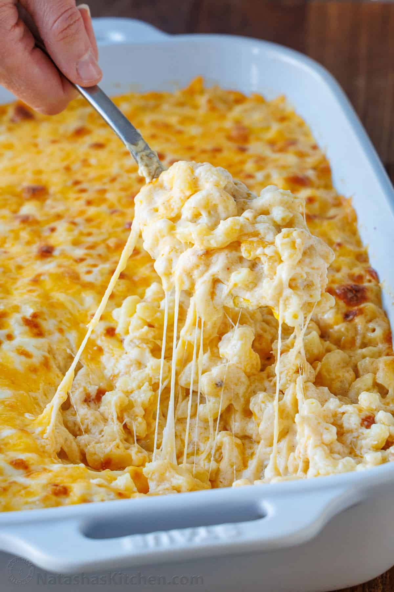

Baked Mac and Cheese Recipe

Description
This easy Baked Mac and Cheese recipe has all the creamy comfort food nostalgia with an extra cheese twist. We swap the typical breadcrumb topping for a cheese topping that the kids prefer, and it keeps the casserole extra moist and gooey.
Ingredients
- Pasta - we use traditional elbow macaroni, but you can swap it with bowties or any small pasta shape. Be sure to reserve some of the starchy pasta water to thin the cheese sauce after cooking.
- Dairy - butter, whole milk, and heavy cream make the casserole rich and creamy and ensure it reheats well.
- Pasta Cooking Water - don’t forget to reserve some of your cooking water – it adds flavor and starch to the sauce. If you forget, add more milk and a little extra salt.
- Cheese - we combine classic medium cheddar cheese and low-moisture part-skim mozzarella cheese. For a fancier Mac and Cheese, you can use sharp cheddar cheese or swap the mozzarella cheese for Gruyere (it gives a bit of an elevated nutty flavor to the sauce), or try Pepper Jack or Colby Jack.
- Flour - we use all-purpose flour to help thicken up the sauce, stabilize the cheese and create a smoother texture.
- Seasonings - salt, paprika, ground mustard (or substitute ground mustard with 2 tsp of Dijon mustard), garlic powder, onion powder, and black pepper. For a spicier kick, you can try a bit of cayenne pepper.
Steps
- Prep preheat the oven to 350°F and then grease a 3-quart or 9×13-inch casserole baking dish. This feeds 10, so you can also split the recipe into two 1.5 quart dishes to freeze half for later.
- Cook the Pasta in a large pot of salted water. The water should taste like salt water (I use 1 Tablespoon). Keep 1/2 cup of the water, drain the pasta, and then toss with oil to stop it from sticking.
- Mix the cheeses and set aside.
- Make the roux – heat a large pot on the stove (we will mix everything here before baking) and then melt the butter until foamy. Add flour and continue whisking until it smells nutty and browns slightly (2 mins). This cooks off the raw flour taste.
- Slowly whisk in the milk, cream, and 1/2 cup of reserved pasta water. Break up any lumps of flour, until it’s creamy and nearly boiling.
- Season with the paprika, mustard powder (or Dijon mustard), garlic powder, onion powder, 1/2 of salt and pepper, reduce the heat to low, and whisk for 2 minutes. The sauce will thicken to a gravy texture.

- Finish the Cheese Sauce – Add just 3 cups of the cheese mixture and stir. When it’s melted add another 3 cups and stir. Keep the remaining 2 cups for the topping. When everything is gooey, add the cooked pasta, and carefully fold it in so the pasta doesn’t break apart. Turn off the oven and season with salt and pepper.
- Pour the cheesy pasta mixture into the casserole dish. Top with the reserved cheese mixture, and then bake uncovered for 15 minutes. For a more golden topping, set the oven to broil for the last 2 minutes of baking, but watch that the cheese doesn’t burn. Serve warm.